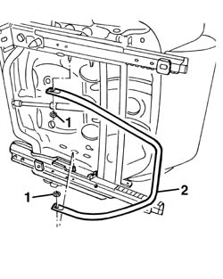

7045A29 seat slide control lever - r r
- Path
- Procedures > 70 FITTINGS > 7045 FRONT SEATS > 7045A front seat assembly > 7045A29 seat slide control lever - r r
- Kind
- repair procedure (removal / refitting; the operation number is the code)
- Applies to
- all engines; all production periods
- Interactive page
- https://sloeber94.github.io/elrnDB-a156/en/#/3238867
Applies to: all engines; all production periods
 Removing
Removing
 Refitting
Refitting7045A10 l/h or r/h front seat (one) - r+r
1. Remove the rod springs.
2. Remove the lever.

Applies to: all engines; all production periods
Refitting
RemovingMake sure that the lever is not damaged.
Reinstall the lever.
Install the rod springs.
7045A10 l/h or r/h front seat (one) - r+r
Check the functioning of the lever and the correct sliding and hooking of the seat.
Topics linked from this page (1)
Topics that link to this page (6)
- O01 FRONT SEAT SLIDING NOT WORKING
- S65 SEATS CREAKING
- 7045A70 front seat support/guide - driver`s side with lift device - r r with seat removed
- 7045A71 front seat support/guide - driver`s side with lift device - r r
- 7045A72 front seat mount/guide - passenger`s side r r with seat removed
- 7045A73 front seat mount/guide - passenger`s side r r